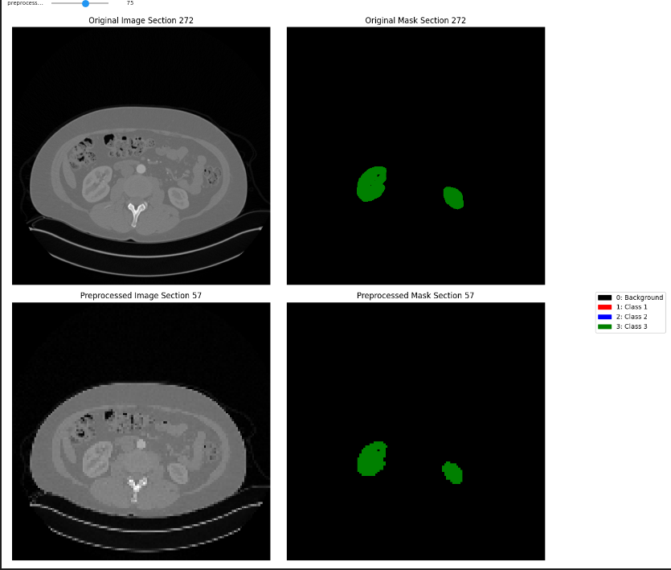
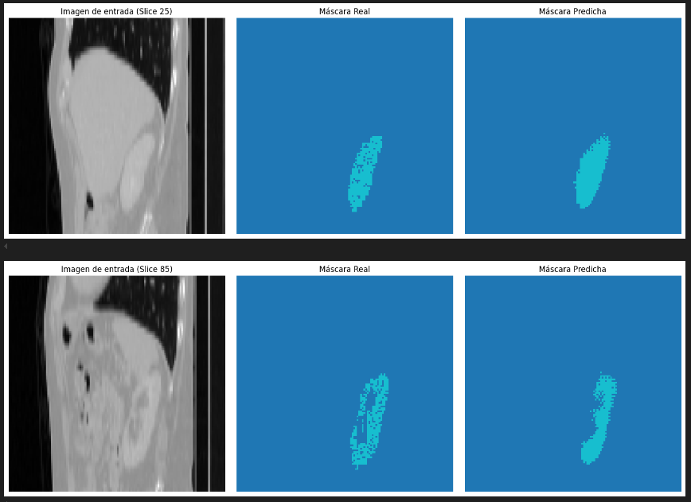
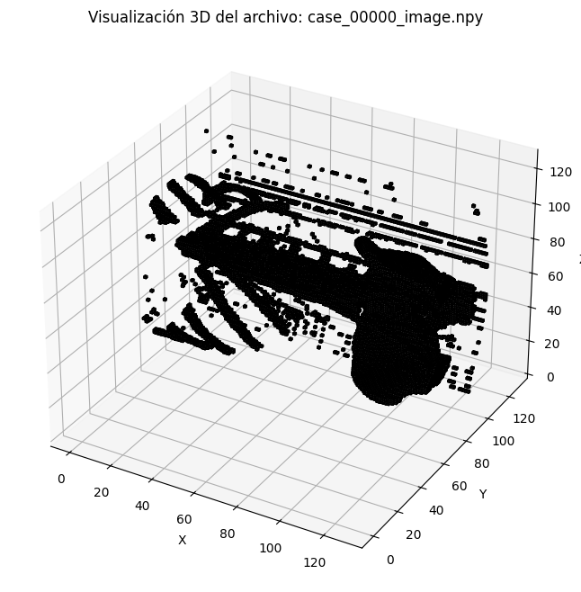

Team project focused on the automatic segmentation of three-dimensional medical images using Computer Vision and Deep Learning techniques.
The objective of this project was to develop and evaluate semantic segmentation models capable of automatically identifying anatomical structures in three-dimensional medical images.
The KiTS23 (Kidney Tumor Segmentation Challenge 2023) dataset was used for this purpose. It consists of computed tomography (CT) studies designed for the segmentation of kidneys, tumors, and associated structures.
Group project (4 members).
KiTS23 Dataset (CT)
│
▼
Preprocessing
│
▼
CNN Training
│
▼
Segmentation
│
▼
Evaluation
Different convolutional neural network architectures were evaluated for medical image segmentation, comparing 2D and 3D approaches. The objective was to study how the use of complete volumetric spatial information affects segmentation quality.
For the 2D approach, a U-Net architecture with a ResNet50 encoder pretrained on ImageNet was used. The medical volumes were divided into equally spaced two-dimensional slices, working with 128 slices per volume.
U-Net uses an encoder-decoder structure. The encoder extracts features while progressively reducing the spatial resolution, whereas the decoder reconstructs the segmentation through upsampling operations. Skip connections allow detailed spatial information to be recovered and combined with the features extracted by the encoder.
The use of ResNet50 allowed previously learned features to be leveraged through transfer learning. Focal Loss and the Adam optimizer were used during training.
Unlike the 2D approach, 3D architectures process the medical volumes directly, using three-dimensional convolutions to preserve spatial information between different slices.
3D U-Net adapts the U-Net architecture to the volumetric domain. Its encoder-decoder structure allows features to be extracted at different scales and the segmentation to be reconstructed while preserving spatial details through skip connections.
V-Net is specifically designed for 3D volumetric segmentation. Its architecture follows a structure similar to U-Net, but incorporates residual connections within the convolutional blocks, facilitating the training of deep networks and improving gradient propagation.
SegResNet is a 3D architecture based on residual blocks and an encoder-decoder structure. In this project, fine-tuning was also performed by freezing the first layers of the encoder and mainly updating the decoder in order to leverage previously learned features.
This strategy provided a good balance between representation capacity and computational cost, achieving the most consistent results among the architectures studied.
The 3D models showed better performance in volumetric segmentation by preserving the complete spatial information of the images. In contrast, the 2D approach is computationally more efficient and allows larger batch sizes to be used, but loses part of the information between consecutive slices.
In the experiments performed, this loss of spatial information contributed to the lower performance of the 2D models compared with the 3D architectures.
Different segmentation architectures were evaluated on the KiTS23 dataset, comparing 2D and 3D models using the IoU and Dice Score metrics.
The experiments made it possible to analyze the impact of model dimensionality, class balancing techniques, and different loss functions on the segmentation of kidneys, tumors, and cysts.
For the 2D experiments, equally spaced slices from the 3D volumes were used, resulting in a total of 124,928 2D images. A U-Net with a ResNet50 encoder pretrained on ImageNet was used.
Due to the strong class imbalance, different sampling strategies were investigated.
| Class | IoU | Dice |
|---|---|---|
| Background | 0.9951 | 0.9975 |
| Kidney | 0.4079 | 0.2324 |
| Tumor | 0.1171 | 0.0592 |
| Cyst | 0.0048 | 0.0010 |
| Class | IoU | Dice |
|---|---|---|
| Background | 0.9951 | 0.9975 |
| Kidney | 0.4473 | 0.2432 |
| Tumor | 0.1042 | 0.0452 |
| Cyst | 0.0001 | 0.0000 |
The 3D models process the medical volumes directly, preserving the spatial information between the different slices.
The U-Net, V-Net, and SegResNet architectures were evaluated, combining them with different loss functions.
| Model | Configuration | Kidney IoU | Kidney Dice | Tumor IoU | Tumor Dice |
|---|---|---|---|---|---|
| U-Net | Combined Loss | 0.4639 | 0.6274 | 0.0245 | 0.0454 |
| V-Net | CB Loss | 0.4118 | 0.5773 | 0.0934 | 0.1546 |
| SegResNet | Focal Loss Weighted | 0.3480 | 0.5142 | 0.1433 | 0.2344 |
In the experiments performed, SegResNet with CB Loss showed consistent performance on validation and test sets. In addition, different SegResNet configurations allowed an improvement in tumor segmentation compared with other architectures.
One of the main problems encountered during the experiments was the strong class imbalance. The background represents most of the voxels, while tumors and cysts occur much less frequently.
| Class | Typical behavior |
|---|---|
| Background | Very high performance |
| Kidney | Considerably better segmentation |
| Tumor | Reduced performance |
| Cyst | Particularly difficult to segment |
Overall, the experiments show a clear difference between the 2D and 3D approaches. Although 2D models have lower computational requirements and allow larger batch sizes, they lose part of the spatial information present in the medical volumes.
3D models, on the other hand, directly exploit volumetric information and achieve better segmentation results, although they require greater computational resources.
Below are some examples of the medical image processing and the results obtained during the 2D and 3D segmentation experiments.

Example of the preprocessing process applied to the 2D slices obtained from the medical volumes. The original images and their corresponding segmentation masks are shown.

Comparison between the input image, the ground-truth mask, and the mask predicted by the segmentation model.

Three-dimensional representation of a medical volume, showing the spatial structure of the data used during the experiments.
This project made it possible to apply Computer Vision and Deep Learning techniques to a real semantic segmentation problem involving medical images from the KiTS23 dataset, comparing different 2D and 3D architectures.
3D architectures showed better performance by leveraging the complete spatial information of the medical volumes, compared with 2D models based on individual slices.
Among the evaluated models, SegResNet with CB Loss achieved consistent performance and stood out compared with U-Net and V-Net, showing a greater ability to extract relevant features.
The strong class imbalance in the dataset represents one of the main challenges of the problem. Although the networks segment the background correctly, performance decreases considerably for the minority classes, especially tumors and cysts.
2D models have lower computational requirements and allow larger batch sizes to be used, but the loss of three-dimensional information limits their segmentation capability compared with 3D architectures.
In conclusion, 3D architectures are more suitable for volumetric medical image segmentation, although further improvements in class imbalance strategies are still necessary to achieve better generalization, especially for the less represented structures.